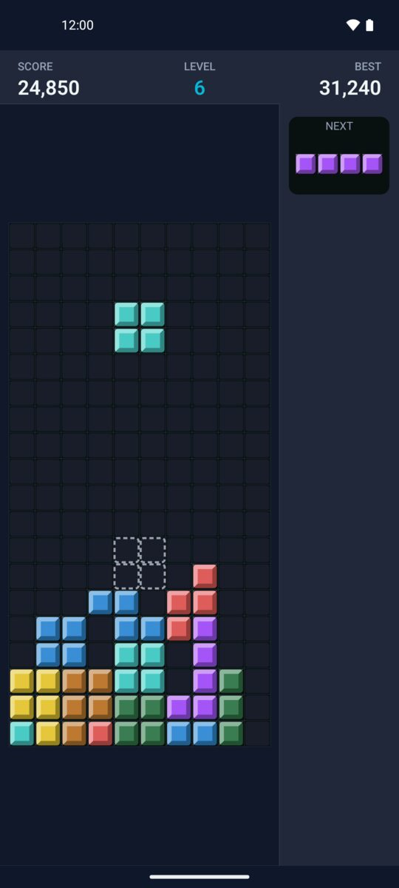
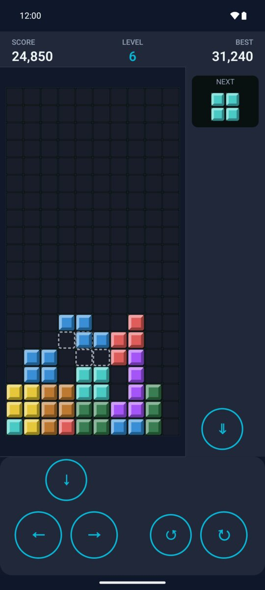
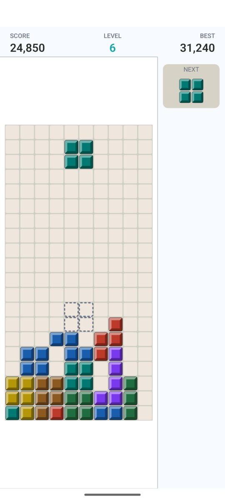
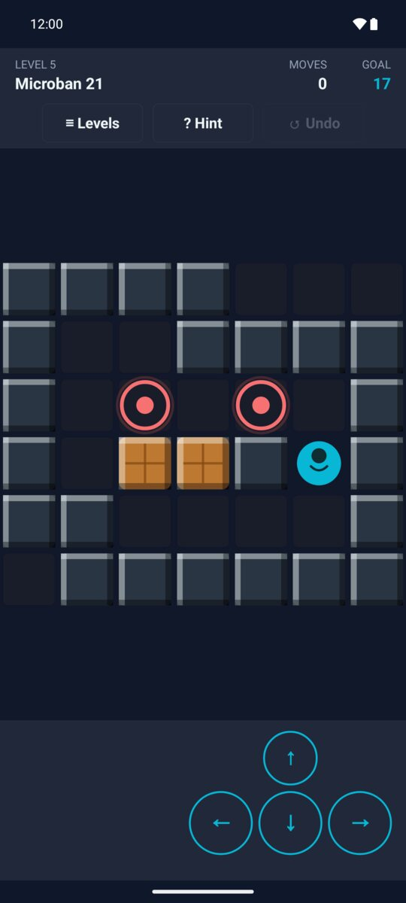
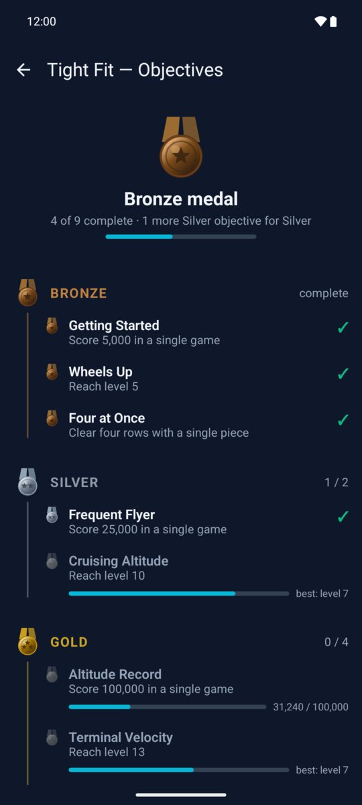
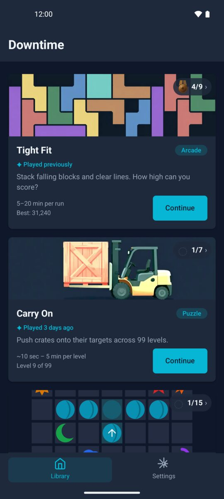
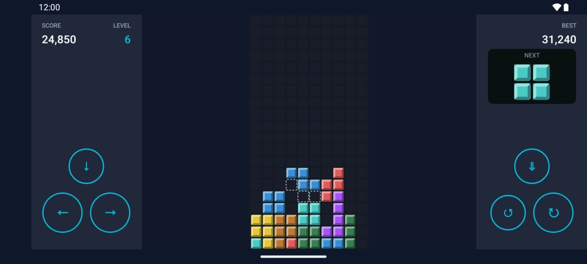
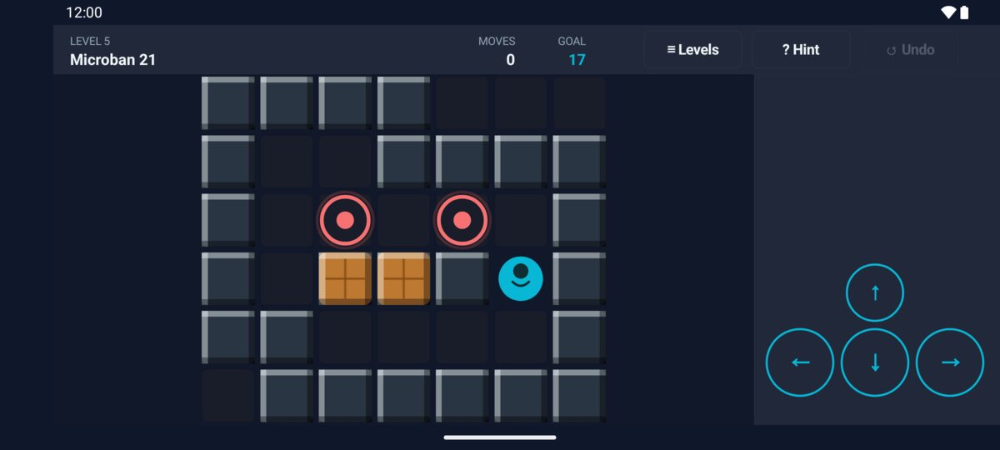

Last updated: 1 August 2026
Downtime is a small collection of offline puzzle games for Android. I built it based on my travelling and commuting experience: on business trips and commuting to the office, most games I tried needed an online connection, or made me wait through adverts, or asked for more time to learn than the journey itself. I wanted something I could open for ten minutes and pause at any moment.
Downtime is exactly that: complete games, small size, playable with no internet connection at all, including in airplane mode. It fills the moments in between - a flight, a commute, a queue, a waiting room - with no adverts, no accounts, no sign-in, and no data collected about the player. Every game is free.
The whole app was built by me as a solo developer working with a team of AI coding agents.
| Name | Downtime: Offline Puzzle Games |
|---|---|
| Developer | Gennadiy Gryva |
| Platform | Android 9.0 (API 28) and above |
| Price | Free |
| Download size | ~7 MB |
| Current version | 1.1.0 |
| Release date | 31 July 2026 |
| Play Store | play.google.com/store/apps/details?id=com.ggryva.downtime |
| Games included | Tight Fit (falling-block puzzle) · Carry On (99 box-pushing puzzles) |
| Adverts | None |
| Accounts / sign-in | None |
| Data collected | None - see the privacy policy |
| Languages | English |
| Contact | gennadiygryva@gmail.com |
Tight Fit - a traditional fast-paced game with falling blocks. Stack the pieces and clear the lines; the longer you last, the faster it gets. A single game takes about 5-20 minutes, but can be paused anytime.
Carry On - box-pushing puzzles in the classic sokoban style. Push every box onto its marked spot. There are 99 levels in total: the first ones take seconds, the later ones can take a while. Most of them come from Microban, a well-known set by David W. Skinner, used here with credit. Both games have objectives and medals to earn, and progress saves automatically.
Click any image for the file shown (portrait 540×1200, landscape 1200×540, JPEG). All are from the 1.1.0 build on a 1080×2400 phone.






Both games play in landscape as well as portrait:


Download the app icon (512×512 PNG).
26 seconds, no sound, captured on a physical device in airplane mode.
All screenshots, the icon and the gameplay capture on this page may be used freely in coverage of Downtime, in whole or cropped, without asking first. The Microban puzzle set is by David W. Skinner and is credited in-app on the Licences screen.
Need something that isn't here - a different screenshot, a longer capture, or an answer for a piece you're writing? Email gennadiygryva@gmail.com and I'll get back to you as quickly as I can, usually within a day or two.